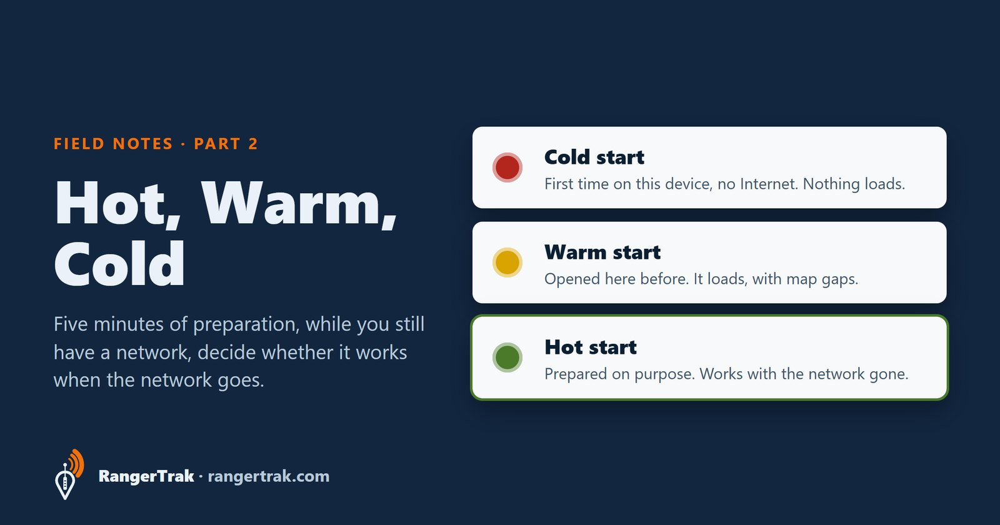
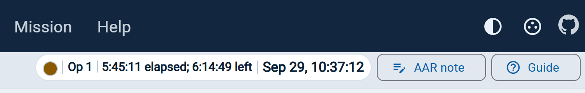

Field Notes · Part 2
Hot, Warm, Cold

RangerTrak is a free, open-source radio log and map for the scribe at a CERT, ACS/ARES, SAR or wildland-fire command post. Log who, where, when and what off the radio; it maps them. It works offline once set up, and prints the Form 309 Communications Log and the ICS-213. I built it, as the first tool from SteadyEOC, my one-person effort building software for teams that have to keep working when the network doesn’t. It’s AGPL and will stay free. Try it at rangertrak.org, no account or install needed.
The alpha is out today. Every planned feature is in. It’s ready to try in a drill or at your desk, not yet for a real call-out, and 1.0 is planned for November. What breaks for you now is what gets fixed before then.
“Works offline” is one of the most over-promised phrases in emergency software. Here's the honest version for RangerTrak: it works with no internet at all, but only if the device was prepared while it still had one. The difference between a prepared device and an unprepared one isn't a slower experience. It's a working tool versus a blank screen.
I think of it the way a generator gets tested: you find out whether it starts on a quiet Tuesday, not during the outage. So this post is about three starting conditions, worth knowing by name, and the five minutes that move a device from the worst to the best.
The three starts
Cold start: first time on this device, no internet. Nothing loads. The app has to arrive from somewhere at least once, and no amount of good design gets around that. If you're caught here, find any connection, even a phone hotspot for a minute, and load it.
Warm start: you've opened RangerTrak on this device before. The app itself will load offline, and map areas you happened to look at are probably still there. Areas you never viewed are blank. It mostly works, with gaps you'll discover at the worst possible moment.
Hot start: prepared on purpose. The app, your roster, your mission settings and map coverage for your area are all already on the device. It works with the network completely gone. This is the only one you want for a real callout.
Getting to hot, in five minutes

Do this at home or at a meeting, on the device that will actually sit on the table:
- Install it. Accept RangerTrak's own install offer, or use your browser's Install app / Add to Home Screen. An installed app gets its own icon and window, and browsers are much more willing to keep its data.
- Protect the storage. On Mission, find the Data safety card and press Request persistent storage if it's offered. Without it, a browser that runs low on disk space is allowed to quietly clear your mission. That risk is highest on iPhones and iPads, where every browser (Chrome included) runs on Safari’s engine, doesn’t reliably honor this request, and can clear a site’s data after about a week unused. Safari on a Mac does the same. There, installing it (step 1) and the backup (step 6) are your real protection.
- Name the mission and set the operating period, also on Mission.
- Load your roster on the Rangers page.
- Prime the maps. On Map, use the layer control in the map's top-right corner to show OpenTopoMap. Saving is switched off on the OpenStreetMap layer, because its volunteers ask people not to bulk-download. Pan to your operating area at the widest zoom you'll need, and press Save this area for offline use in the Offline maps box under the map. It saves that zoom plus two closer levels and tells you roughly how much it will download first. It won't save more than a few thousand tiles at once, so save a big area in pieces. Then flip the switch to the alternative map once. That downloads its built-in world map to the device (roughly 15 MB), and the readiness list shows the download's progress.
- Take a backup. On Mission, press Back up mission and put the file somewhere other than this device. It asks for an optional passphrase. The file holds your whole roster, names and phone numbers included, so use one if the file will travel. Leave it blank and the file is written unencrypted, as it always was.
The dot in the corner is keeping score



You don't have to remember that list. The small colored dot in RangerTrak's mission bar tracks six checks: mission named, a real roster loaded, the operating period current, offline map tiles saved, the alternative map warmed, and storage protected. Hover over it or tap it and it tells you which are still failing on this device.
Each one links straight to the thing that fixes it. Green means hot. It's a checklist that checks itself, which beats a laminated card nobody reads.
Try it: the airplane-mode test
This is the single most useful thing in the whole series. It takes five minutes.
- Work through the steps above on a real device. Demo data is fine for the roster.
- Close RangerTrak completely.
- Turn on airplane mode, and make sure Wi-Fi is off too.
- Open RangerTrak again. Log a report. Open the Map and pan around your area. Open the Radio Log.
- Write down anything that was blank, slow, or broken. Then turn the network back on and delete your test report.
Rather be led through it? Module 6 of the RangerTrak Tour Guide, Lights out, walks you through it hands-on. New to RangerTrak? Start the tour.
The alternative map’s built-in world map is low detail everywhere: enough to see where you are, not which street you're on. (A demo mission brings street detail for its own area while it’s loaded; a real mission doesn’t.) The area you saved in step 5 is your detailed offline map. If you want street detail on the alternative map too, a coordinator can make a map file for your area once and share it. The steps are in the app’s Help, under Your data → Make a map file for your area. One thing that won't work in airplane mode: looking up a street address. That needs the Internet. Every coordinate format works offline.
Tell me
- Did your device pass the airplane-mode test? What kind of device and browser was it, and what went blank?
- Which readiness check was hardest to turn green, and why?
- Who in your team would do this preparation, and when: at a monthly meeting, at deployment, never? That answer changes what I should build next.
Use the feedback form (start with “Blog 2”), Help → feedback inside the app, or email RangerTrak [at] steadyeoc [dot] com. Device and browser details are gold.
The series
- The Paper Log, Without the Paper
- Hot, Warm, Cold (this post)
- However They Read It Out: coordinates and maps
- From Radio Log to Form 309 and ICS-213
- More Than One Laptop
- What’s Missing, and Who Decides
- Your Roster Is Already in a Spreadsheet
- Shift Change: Op Periods, Scribes and Laptops
- After the Mission: Summaries, AAR and the Final Report
- Field Phones, Up Close
- RangerView
- People, Teams and Places: help me get this right
Next: However They Read It Out. MGRS, UTM, Maidenhead, Plus Codes, or a street address: taking a position however the field team reads it, and why a code your device can calculate beats one it has to look up.